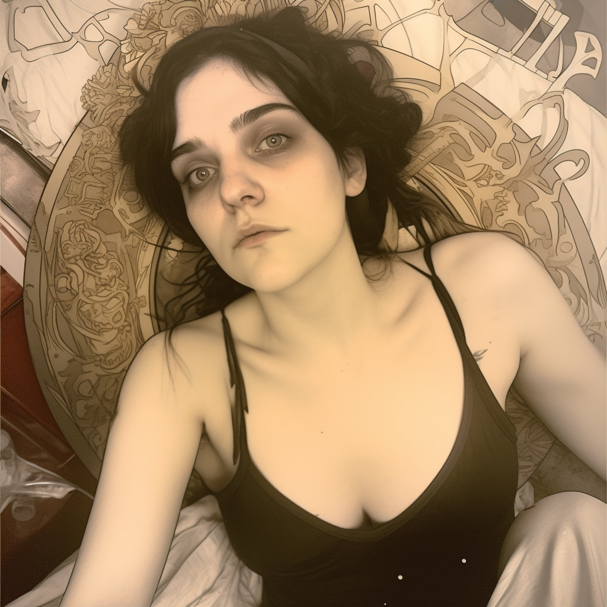

About Me
Greetings! I am an artist who has been passionately creating art since the age of 13. Art isn't just a desire for me; it's an irresistible impulse that I must act upon. I generate so much material that people often wonder if I'm a robot or a human - what can I say, I'm just an art-producing machine! I speak multiple languages, both computer and human, which means I can code a website and converse with you about it in the same breath. Some say I'm a little unhinged, but hey, it's all part of the creative process, right? As I mature, I discover more and more human aspects of myself, such as my emotional sensitivity, which I channel into my art - just like Fiona Apple. I also possess the same level of pensiveness as David Foster Wallace, but without the footnotes. My mind takes my body hostage, driving me to push the boundaries of my creativity - I'm unstoppable! And as a morally-minded vegetarian, I'm always thinking about the impact of my actions on the world. When I'm not creating art, you can find me delving into artificial intelligence, science, computers, and other wacky and wonderful subjects. So, let's create something amazing together!
In my free time, I enjoy music art and all thing tech. I also love to read and get inspiration for my work from different cultures and experiences.